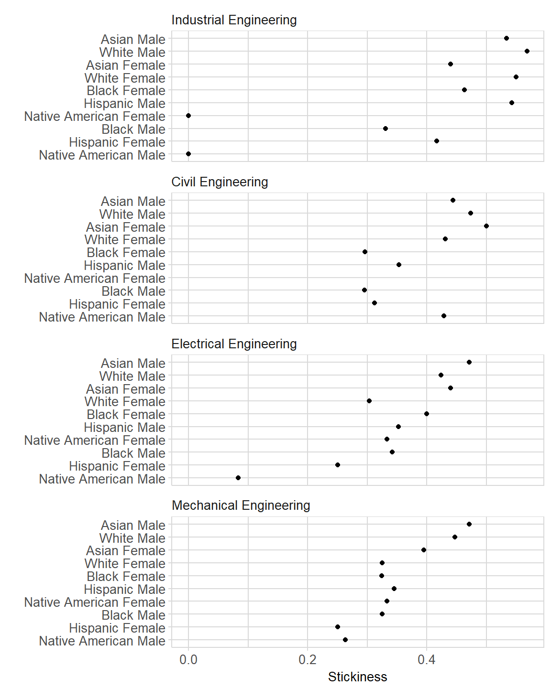

Stickiness data can be organized as multiway data. There is one quantitative variable, stickiness, and two categorical variables, program and the students’ race-sex group. To quote Bill Cleveland (1993),
the quantitative variable is a response, and the goal is to study how it depends on the categorical variables, which are factors. What distinguishes multiway data is the cross-classification of the categorical variables; there is a value of the response for each combination of levels of the two categorical variables.
In this case, there is one value of stickiness for each combination of program and student race-sex group.
Before computing medians and ordering the data, we select the populations we are interested in. For example, we might omit students for whom the “race” designation is ambiguous. This step could have been taken earlier, but must be taken (if at all) before using multiway_order().
# stickiness is an example dataset
glimpse(case_stickiness)
#> Observations: 64
#> Variables: 6
#> $ program <chr> "Civil Engineering", "Civil Engineering", "Civil Engin...
#> $ race <chr> "Asian", "Asian", "Black", "Black", "Hispanic", "Hispa...
#> $ sex <chr> "Female", "Male", "Female", "Male", "Female", "Male", ...
#> $ ever <dbl> 22, 54, 71, 132, 16, 85, 2, 22, 0, 7, 12, 32, 2, 10, 4...
#> $ grad <dbl> 11, 24, 21, 39, 5, 30, 1, 5, 0, 3, 1, 8, 1, 4, 192, 70...
#> $ stick <dbl> 0.500, 0.444, 0.296, 0.295, 0.312, 0.353, 0.500, 0.227...
stickiness <- case_stickiness %>%
filter(!race %in% c("Unknown", "International", "Other"))Save this version of the data for later table printing.
We combine race and sex into a single variable using str_c() from the stringr package. This is necessary to create the multiway data structure required by multiway_order().
# combine two variables into one
stickiness <- stickiness %>%
mutate(race_sex = stringr::str_c(race, sex, sep = " ")) %>%
select(program, race_sex, stick)
glimpse(stickiness)
#> Observations: 40
#> Variables: 3
#> $ program <chr> "Civil Engineering", "Civil Engineering", "Civil Engi...
#> $ race_sex <chr> "Asian Female", "Asian Male", "Black Female", "Black ...
#> $ stick <dbl> 0.500, 0.444, 0.296, 0.295, 0.312, 0.353, NA, 0.429, ...Our glimpse() of the data frame shows that we have two categorical variables and one quantitative variable, exactly the form needed.
multiway_order() transforms the character variables program and race_sex into factors and orders the levels of the two factors by the relevant medians.
# convert the data to a multiway structure
stickiness <- multiway_order(stickiness)
glimpse(stickiness)
#> Observations: 40
#> Variables: 3
#> $ program <fct> Civil Engineering, Civil Engineering, Civil Engineeri...
#> $ race_sex <fct> Asian Female, Asian Male, Black Female, Black Male, H...
#> $ stick <dbl> 0.500, 0.444, 0.296, 0.295, 0.312, 0.353, NA, 0.429, ...glimpse() shows that the two categorical variables are factors. To see the order of the levels of the new factors,
# programs ordered by median stickiness from least to most
levels(stickiness[["program"]])
#> [1] "Mechanical Engineering" "Electrical Engineering"
#> [3] "Civil Engineering" "Industrial Engineering"Thus, comparing just these majors, Mechanical Engineering is the least sticky and Industrial Engineering the most sticky.
# race-sex groups ordered by median stickiness from least to most
levels(stickiness[["race_sex"]])
#> [1] "Native American Male" "Hispanic Female"
#> [3] "Black Male" "Native American Female"
#> [5] "Hispanic Male" "Black Female"
#> [7] "White Female" "Asian Female"
#> [9] "White Male" "Asian Male"Among the student groups, Native American Male is the least sticky and Asian Male the most sticky.
The data are ready for graphing.
Graphing the multiway
We use conventional ggplot2 functions to create the multiway graphs.
By previously ordering the levels of the factors, we have structured the data so that the rows and panels of the multiway graph are ordered by the appropriate medians.
ggplot(stickiness, aes(x = stick, y = race_sex)) +
facet_wrap(~ program, ncol = 1, as.table = FALSE) +
geom_point(na.rm = TRUE) +
labs(x = "Stickiness", y = "") +
midfield_theme() 